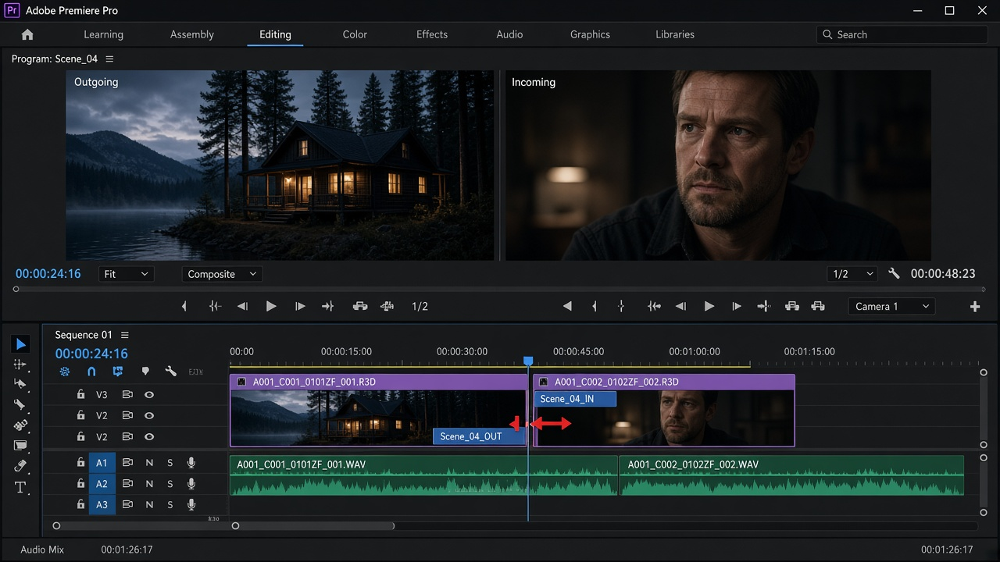

Ripple · B
잔물결 편집
한쪽 가장자리만 늘리거나 줄입니다. 시퀀스 전체 길이가 바뀌고, 뒤 클립이 따라 움직입니다.
레슨 06
레이저는 큰 덩어리를 나눕니다. 트림은 그 경계를 프레임 단위로 옮깁니다. 좋은 컷은 여기서 결정됩니다.
Ripple · B
한쪽 가장자리만 늘리거나 줄입니다. 시퀀스 전체 길이가 바뀌고, 뒤 클립이 따라 움직입니다.
Rolling · N
맞닿은 두 클립의 경계를 함께 밉니다. 앞 샷이 길어지면 뒤 샷이 짧아집니다. 전체 길이는 그대로입니다.
Slip · Y
클립이 타임라인에서 차지하는 자리는 그대로입니다. 그 안에서 보이는 원본 구간만 앞뒤로 미끄러집니다.
Slide · U
클립 내용은 그대로 두고, 앞뒤 클립 사이를 미끄러져 자리를 바꿉니다. 이웃 클립 길이가 보상됩니다.
V 상태에서 클립 가장자리에 커서를 올리면 트림 아이콘이 됩니다. 그냥 드래그하면 일반 트림(구멍을 남길 수 있음), Ctrl을 누른 채 가장자리를 드래그하면 Ripple에 가깝게 동작합니다. 컷과 컷이 맞붙은 경계에서는 Rolling 커서가 나타나기도 합니다.

트림의 정답은 Program을 재생해 보는 것입니다. 파형을 보고 숨이 끝나는 지점에 경계를 두면 말 컷이 안정됩니다.